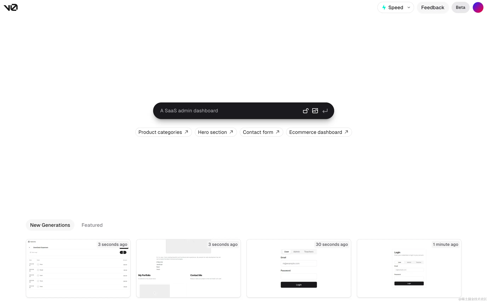
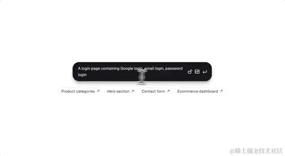
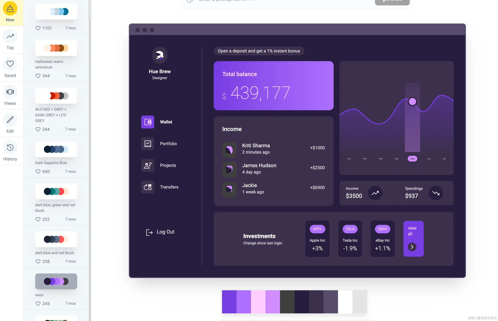
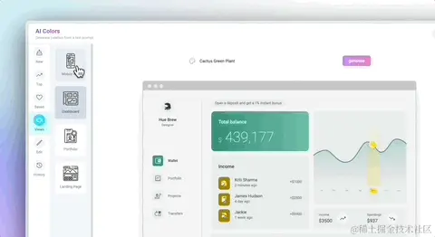
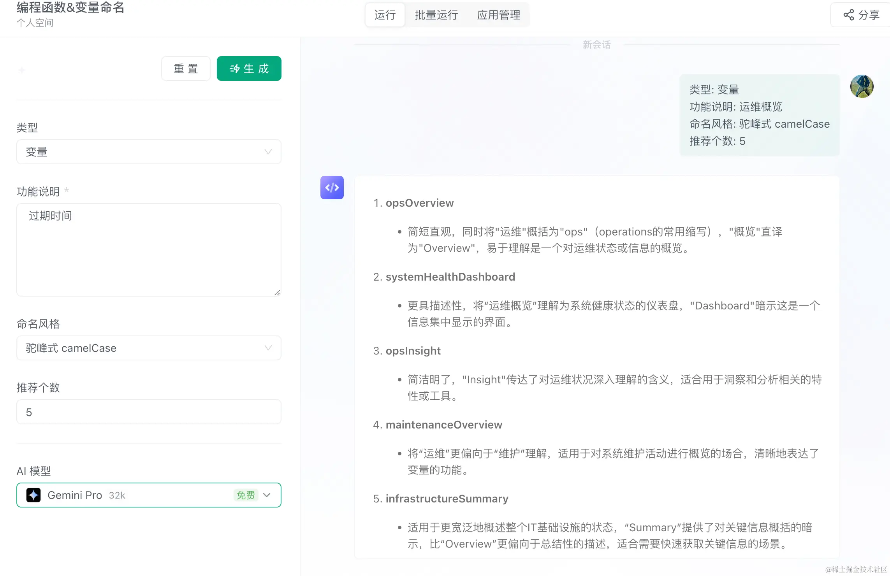

v0.dev

- 这是一个
AI生成原型图和前端代码的页面。
- 相信有很多同学都会认为
AI生成前端页面代码是一件很鸡肋的事情，我一年前也是这么想的，但是当我真正用上了AI之后发现并不是这样的。
- 虽然
AI不能完美帮你切图，做好一个完美的页面，但是对于一些简单的页面他可是有大用处

- 比如说，我想要做一个登录页，我只需输入
prompt，然后一个登录页的基本框架就做出来了，旁边还可以看到他的代码，并且是用 tailwindcss写的。
- 我们直接复制到项目中就可以使用了，如果你不满意的话，还可以跟他持续对话让他来修改。这一个页面看上去很简单的是吧，但是如果让我们自己去写的话肯定还是会费一点时间的，还得思考一下排版什么的。

- 但是用
AI就可以几秒钟生成了，我们再对其进行微调即可，改改背景色啊，字体大小啊什么的。
- 一个页面是如此，很多个页面也是如此，一个很复杂的页面你也可以将它划分成组件来
AI生成，这确实可以帮我们节省很多时间。
- 当然他也支持上传图片生成原型和代码，感兴趣的朋友可以试试看。
- 地址：
https://v0.dev/
AI Colors

- 大家开发网页的时候肯定有遇到过颜色不知道怎么搭配的难题，这是一个适用于网页开发的调色板，用到的颜色都会通过示例卡片进行展示。
- 它不仅内置了很多好看的配色板，还有各种用户生成的色板趋势排行榜，最重要的是他还可以通过文本
AI生成你想要的主题给你生成对应的色板
- 比如我们输入
Cactus Green Plant ，类似仙人掌主题的风格，他会在示例网页卡片中给你搭配好对应颜色，并且在下面会给出你所有色值。

- 我们点击左边的
views,他会分别在移动端 概览页 个人页 landing page 等页面应用刚刚生成的配套颜色，我们还可以再编辑页面对颜色进行微调，是不是很直观，这个真的很适合独立开发或没有UI的项目提供灵感和帮助。
- 地址：
https://aicolors.co/
Anakin.ai - 代码函数变量命名

- 这是
Anakin.ai 的一个应用，作为开发，我们写代码的时候经常会遇到函数或者变量不知道怎么命名的情况，然后这个时候呢就会很头疼，好不容易想出来了但是感觉这个命名又不够地道，这时候就很烦。
- 那么这时候我就会用这个工具，我们只需要选择是给函数命名还是变量，简单说明一下这个变量是干嘛的，然后选择命名风格，驼峰还是常量等，点击生成，他就会给你生成对应数量的命名参考。
- 并且！！！他还给你解释，为什么要用这个命名，让你去选择，这不就相当于让别人给你打工嘛，真的很实用。
- 地址：
https://app.anakin.ai/apps/1760?r=dCgkHklC